Guias de pagamento de impostos (GNRE e outras)
Pré-requisitos
- A empresa precisa ter a GNRE habilitada para abrir as guias de pagamento. Se a opção não aparecer para você, peça acesso ao administrador da conta.
- Para a guia refletir DIFAL ou ST, a regra correspondente precisa estar definida na aba Notas Fiscais.
- Para guias de fulfillment, marque Gerar guias de fulfillment e indique o canal em configurar integrações.
- Para registrar o pagamento de uma guia gerada, escolha uma conta financeira no seletor da guia.
Importante
- Convênio padrão é obrigatório em cada receita usada. Enquanto não for informado, o estado pode aparecer como Configuração pendente.
- A geração automática depende de Enviar NF ao módulo GNRE ao autorizar e de Gerar guias automaticamente ao enviar NF ao módulo GNRE.
- corrigir não edita a guia. A orientação é remover a guia, cancelar a nota já emitida, reemitir em Vendas > Notas Fiscais e gerar a guia novamente.
- Marcar como pago e concluir só fica disponível depois de escolher a conta financeira. Use só quando o pagamento for de fato registrado.
- gerar novamente, Lançar contas e remover alteram os dados da guia.
- Guias com data de pagamento expirada continuam na lista até serem geradas novamente. Use gerar novamente da faixa só se quiser atualizar a data de pagamento.
- Cancelar descarta o que não foi salvo.
Instruções
Configurar a geração das guias
-
Acesse Configurações > Configurações ERP.
-
Abra a aba Notas Fiscais.

-
Abra Configurações da Guia Nacional de Recolhimento de Tributos Estaduais (GNRE).
-
Confira Categoria padrão contas a pagar.
-
Marque, conforme a operação: Enviar NF ao módulo GNRE ao autorizar, Gerar guias de fulfillment e Gerar guias automaticamente ao enviar NF ao módulo GNRE.
-
Informe o Marcador padrão.
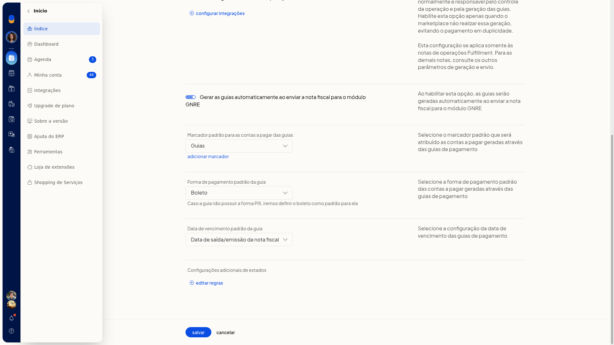
-
Em Forma de pagamento, escolha Boleto ou Pix. Sem Pix, o boleto é o padrão.
-
Em Vencimento, escolha Data de saída/emissão da nota fiscal, data de geração da guia ou próximo dia útil após a geração.
-
Clique em Salvar. As notas autorizadas podem ser enviadas ao módulo GNRE e as guias podem ser geradas automaticamente, com categoria, marcador, forma de pagamento e vencimento padrão. Cancelar descarta as alterações.
Informar o convênio por estado
-
Na configuração da GNRE, abra Editar regras.
-
No painel Configurações adicionais de estados, localize o estado. Vários aparecem como Configuração pendente até o convênio ser informado.
-
Abra o estado e a receita usada. No Amapá, as abas são 100099 ICMS ST e 100102 ICMS DIFAL.
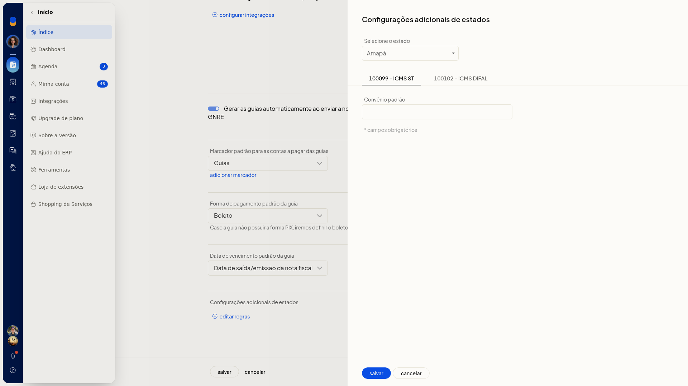
-
Preencha Convênio padrão em cada receita usada. O campo é obrigatório.
-
Grave a regra para o estado deixar de depender da configuração pendente. Se não for gravar, clique em Cancelar.
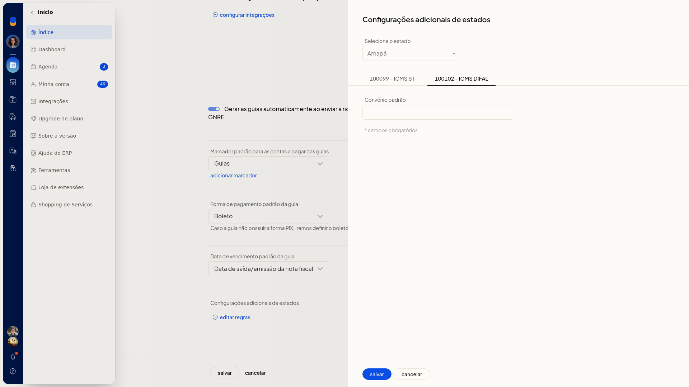
Indicar canais de fulfillment
-
Na configuração da GNRE, abra configurar integrações.
-
A lista mostra os canais já conectados à empresa. Não é preciso ativar a integração nesta consulta.
-
Marque os canais que devem gerar guias de fulfillment.
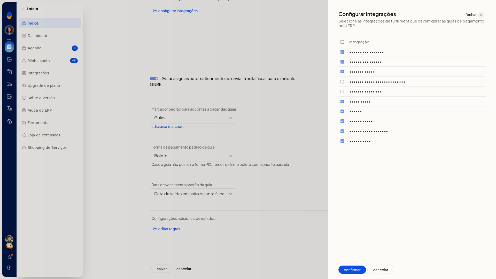
-
Clique em Confirmar. Os canais marcados passam a ser considerados na geração de guias de fulfillment, desde que Gerar guias de fulfillment esteja habilitada. Cancelar fecha sem alterar a seleção.
Consultar as guias
-
Acesse Vendas > Notas Fiscais > guias de pagamento.
-
Em Pesquise por cliente ou número, localize a guia. O refinamento oferece número, cliente ou Não refinar.
-
Em por periodo, filtre pela data de emissão: sem filtro, período, mês, últimos 30 dias ou uma data.
-
Em todos os estados, restrinja a UF. Cancele se não quiser aplicar.
-
Em todas as guias, escolha Todas as guias, Vencidas, A vencer ou Pagamento expirado. Cancele se não quiser aplicar.
-
Troque de aba: Aguardando, Com erro, Guias geradas ou Guias pagas. As três últimas exibem contagem.
-
Na aba Guias geradas, a lista mostra N° da nota, Receita, Data emissão da nota, N° de controle, Data vencimento, Data prev. pagamento, CPF/CNPJ/Insc. Est., UF, Valor (R$) e Integrações. O rodapé mostra a quantidade e o valor total do imposto.
-
Se houver guias com data de pagamento expirada, a faixa avisa e oferece gerar novamente. Use esse botão só para atualizar a data de pagamento.
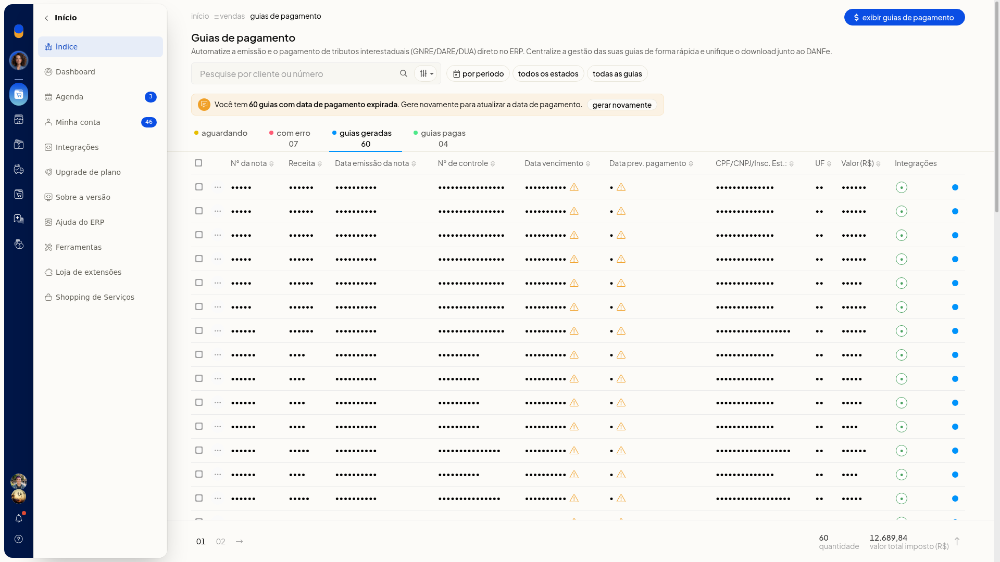
-
Na aba Com erro, as colunas são Nº, Data emissão, Cliente, UF, Imposto (R$) e Erro, com a ação corrigir.
-
Na aba Guias pagas, a lista segue as colunas da guia emitida. O menu da linha oferece imprimir, Download unificado e remover. Você localiza as guias por situação, período, estado e vencimento, e vê quantidade, valor total e, quando houver, o aviso de pagamento expirado.
Exibir, imprimir ou registrar o pagamento
-
Em Guias geradas, abra o menu da linha.
-
As opções são Exibir guia de pagamento, gerar novamente guia de pagamento, imprimir e remover.
-
Escolha Exibir guia de pagamento para abrir o documento, com código de barras, sem alterar a guia.
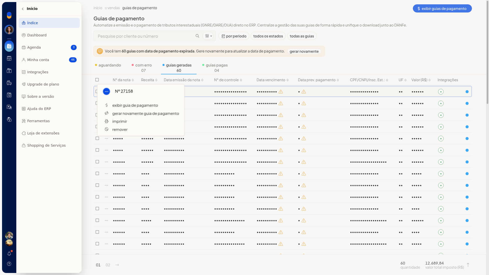
-
Clique em Imprimir guia para emitir a impressão. Em Selecione, escolha a conta financeira do registro do pagamento, entre caixa, bancos e gateways. Marcar como pago e concluir só deve ser usado quando o pagamento for de fato registrado.
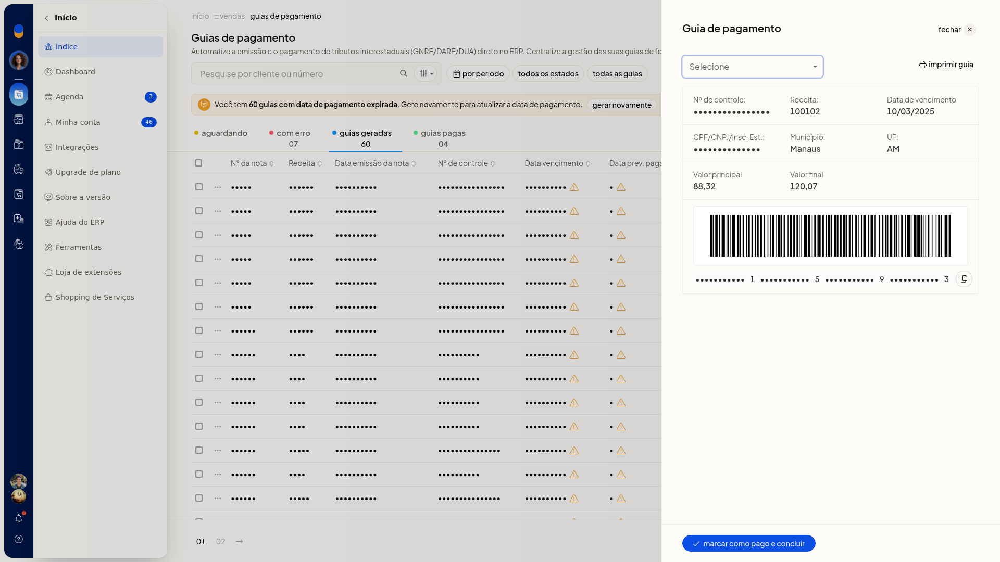
-
Para várias guias, marque as linhas. A barra oferece Exibir guias de pagamento, Lançar contas e Mais ações.
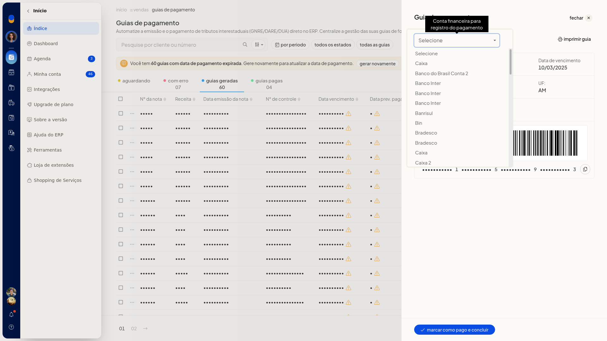
-
Em Mais ações, use Exibir guias de pagamento, gerar novamente guias de pagamento, Lançar contas ou remover.
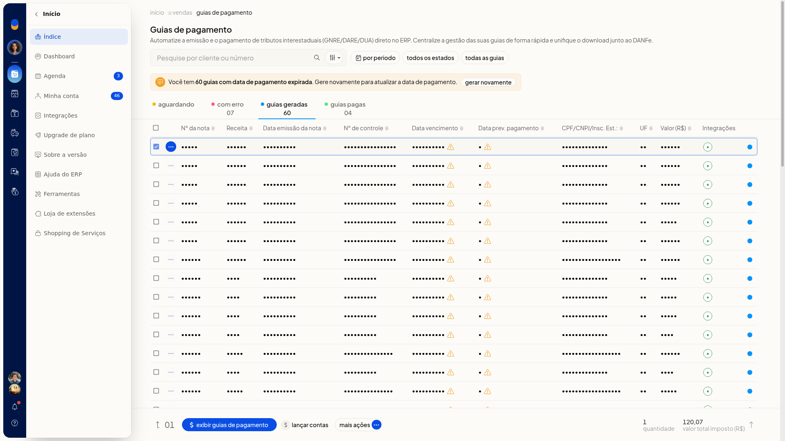
-
Nas guias pagas, a seleção em lote oferece Lançar contas e, em Mais ações, Lançar contas e Download Unificado. A guia gerada pode ser consultada e impressa. O pagamento, o lançamento de contas, a nova geração e a remoção ficam no mesmo menu.
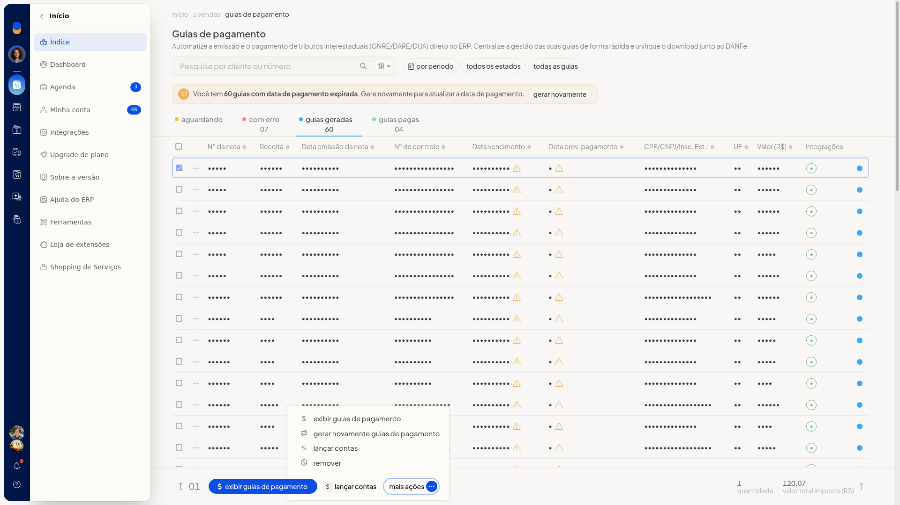
Tratar uma guia com erro
-
Abra a aba Com erro.
-
Leia o texto da coluna Erro. Os motivos podem ser CEP ou código de município inválido, ou CNPJ/CPF que não confere com a chave de acesso.
-
Clique em corrigir. O painel mostra os dados da guia e orienta a remover a guia, cancelar a nota já emitida, reemitir em Vendas > Notas Fiscais e gerar a guia novamente. Não há campos editáveis.
-
O menu da linha também oferece imprimir e remover.
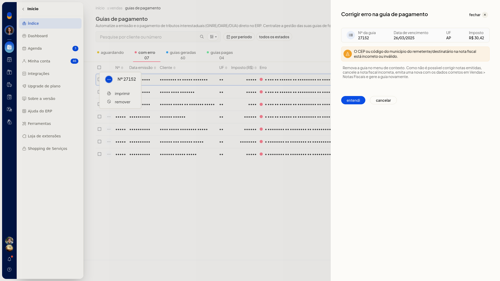
-
Siga a orientação para corrigir a falha: remova a guia, cancele e reemita a nota e gere a guia de novo. entendi apenas fecha o aviso e não grava correção na guia. cancelar fecha o painel se você não for seguir a orientação.
Resultado
As guias emitidas aparecem em Guias geradas, com receita, vencimento, UF e valor. O rodapé soma a quantidade e o valor total do imposto. As guias já pagas ficam em Guias pagas. As falhas ficam em Com erro, com o motivo na coluna Erro. Exibir guia de pagamento abre o documento com código de barras, sem marcar a guia como paga.
Informações adicionais
- As regras já gravadas da GNRE aparecem preenchidas ao reabrir a tela.
- O filtro de últimos 30 dias pode esvaziar as abas. Limpe os filtros para voltar a listar as guias existentes.
- O download unificado das guias pagas reúne os arquivos junto ao DANFe.